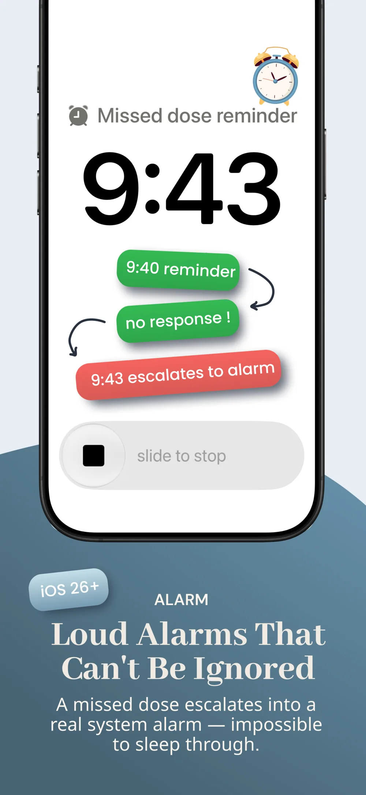

What to Do If You Miss a Birth Control Pill by 12 Hours: Missed Dose Protocol
Realizing you forgot your daily birth control pill is alarming, but what you do next depends entirely on whether your pill contains estrogen plus progestin (Combination Pill) or progestin alone (Mini-Pill). Below is the evidence-based protocol established by the CDC and ACOG.
| Contraceptive Type | Late / Missed Window | Immediate Action | Backup Protection Required? | Emergency Contraception (EC)? |
|---|---|---|---|---|
| Combination Pill (COC) (e.g., Yaz, Sprintec, Junel) | 12 Hours Late (< 24 hours elapsed) | Take the late pill immediately. Take the next pill at regular time (even if taking 2 pills in one day). | No backup needed. Contraceptive efficacy remains above 99%. | Not indicated for a single 12-hour delay. |
| Combination Pill (COC) (2+ active pills missed) | 48+ Hours Late (2 consecutive days) | Take most recent missed pill now. Discard older missed pills. Resume daily schedule. | Yes. Use condoms or abstain for 7 consecutive days. | Recommended if unprotected intercourse occurred in prior 5 days during Week 1. |
| Traditional POP Mini-Pill (Norethindrone 0.35mg) | 12 Hours Late (Exceeds 3-hour limit) | Take the late pill as soon as remembered. Take next pill on normal schedule. | Yes. Use backup protection (condoms) for the next 48 hours. | Consider EC if unprotected sex occurred in the past 48–72 hours. |
| Drospirenone Mini-Pill (Slynd 4mg) | 12 Hours Late (24-hour safety window) | Take the missed pill immediately. Take next pill at regular time. | No backup needed. Slynd has a 24-hour missed window like COCs. | Not required for a single 12-hour delay. |
1. Combination Pills (Estrogen + Progestin): 24-Hour Safety Buffer
Combination pills work by suppressing ovulation via LH and FSH inhibition. Because follicular maturation takes days to resume, a single 12-hour delay is considered "late" rather than "missed".
- Take the late pill immediately: Do not wait for tomorrow's scheduled time.
- Take your next pill as scheduled: Taking two pills in one day is safe and preserves steady hormone concentrations.
- Backup contraception: Condoms are not necessary for a single 12-hour delay.
2. Progestin-Only Mini-Pills: Strict 3-Hour Window
Traditional progestin-only pills (0.35 mg norethindrone) rely primarily on thickening cervical mucus to block sperm passage. This thickening effect decays within 20 to 24 hours.
- A 12-hour delay exceeds the strict 3-hour safety window, allowing cervical mucus to thin.
- Take the late pill now and take your next dose at your usual time.
- Critical Action: Use condoms or abstain for 48 hours while the hormone re-thickens cervical mucus.
Built into Supplement & Pill Reminder
Never miss your birth control window again
Set persistent critical alarms that break through Apple Do Not Disturb and iOS Focus modes, with flexible 15-minute smart snooze until you log the dose.
Set Up Smart Pill Alarms Free on iOS →
Cycle Phase Risk: Week 1 vs. Week 2 vs. Week 3
When missing combination pills, your cycle week determines ovulation risk:
- Week 1 (Highest Risk): Missing pills immediately after the 7-day placebo interval extends the hormone-free window, potentially triggering ovulation. If 2+ pills are missed and unprotected sex occurred in the past 5 days, emergency contraception is advised.
- Week 2 (Lowest Risk): Ovaries are deeply suppressed after 7 consecutive active pills; a 12-hour delay carries negligible risk.
- Week 3 (Moderate Risk): If 2+ pills are missed, finish all active pills and skip the placebo week by starting a new pack immediately.
When to Use Emergency Contraception (Plan B)
Emergency contraception (levonorgestrel / Plan B) is only warranted if you take a traditional POP mini-pill and had barrier-free intercourse within the past 48 hours, or if you missed 2 or more combination pills in Week 1. Just as with supplement timing protocols and daily habit routines, relying on persistent automated alarms eliminates dosing anxiety permanently.
Frequently Asked Questions
Am I protected if I take my combination birth control pill 12 hours late?
Yes. Combination birth control pills maintain ovulation suppression for up to 24 hours past your scheduled time. Taking one pill 12 hours late does not compromise efficacy, provided you take it immediately and continue your pack on schedule.
Can I take two birth control pills on the same day if I forgot?
Yes. If you miss a dose by 12 hours and your next dose is due shortly, taking two pills on the same calendar day is safe and clinically recommended to keep systemic hormone levels stable.
What if I take a progestin-only mini-pill 12 hours late?
If you take a traditional norethindrone mini-pill, a 12-hour delay exceeds the 3-hour window. Take the pill immediately, take tomorrow's pill on schedule, and use backup contraception (condoms) for 48 hours.
Do I need Plan B if I took my combination birth control pill 12 hours late?
No. Emergency contraception (such as Plan B) is not necessary for a single 12-hour delay with combination pills. It is only indicated if you missed two or more consecutive pills (48+ hours) during Week 1 of your pack.